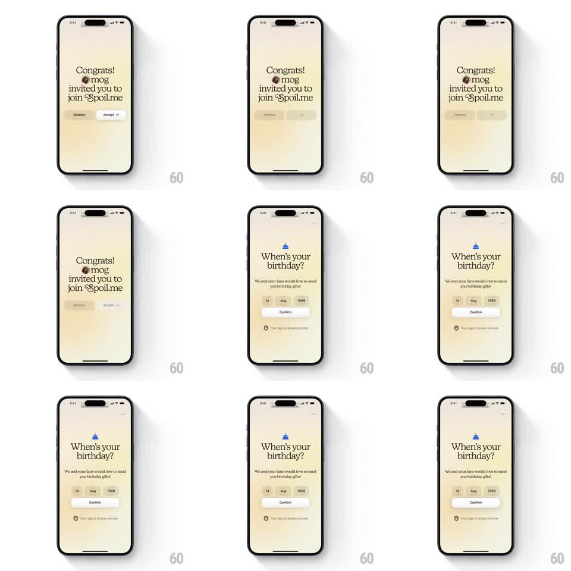

Media
Frame-by-frame

Rebuild this interaction 1:1: Spoil Me's invite onboarding - an elegant cream invite card ("Congrats! @mog invited you to join Spoil.me") whose buttons fade on Accept, transitioning to a birthday picker with a springy confirm.

Rebuild this interaction 1:1: Spoil Me's invite onboarding - an elegant cream invite card ("Congrats! @mog invited you to join Spoil.me") whose buttons fade on Accept, transitioning to a birthday picker with a springy confirm.
## Integration
Integration: stack-agnostic spec - springs given as stiffness/damping, timed motions as duration + curve; map every value to your framework and animation library of choice.
## Scene
Warm cream screens in a serif face. Screen 1: "Congrats!" headline, inviter handle ("@mog"), "invited you to join Spoil.me", with Dismiss and Accept pill buttons. Screen 2: a small party-hat glyph, "When's your birthday?", subline ("We and your fans would love to send you birthday gifts!"), day / month / year selector chips (14 / Aug / 1999), a Confirm pill, and a "Your age is always private" footnote.
## Motion spec
Pattern: soft crossfade flow with springy confirmations.
- Tap Accept: the button row fades and slides down (200ms) as the whole invite block lifts and crossfades to the birthday screen (350ms, ease-out).
- The birthday screen elements stagger in: hat glyph pops (scale 0.8 to 1.0, spring ~300/20), then headline, subline, chips, Confirm (60ms apart).
- Tapping a chip opens its picker; the chosen value settles into the chip with a small bounce (spring ~400/22).
- Tap Confirm: the button compresses (scale 0.96, 100ms) and releases, then the screen crossfades onward; the private-age footnote fades in last on the birthday screen (300ms delay).
## Calibration
- Everything is gentle: no hard cuts, no fast slams - this product sells warmth.
- Chips are light beige with dark text; the Confirm pill is the only solid dark element.
## Reduced motion
Screens crossfade; chips update without bounce.
## Don't miss
- The serif headline does the brand work - keep it large and loosely tracked.
- The invite and birthday screens share the same centered composition so the crossfade reads as a continuation.